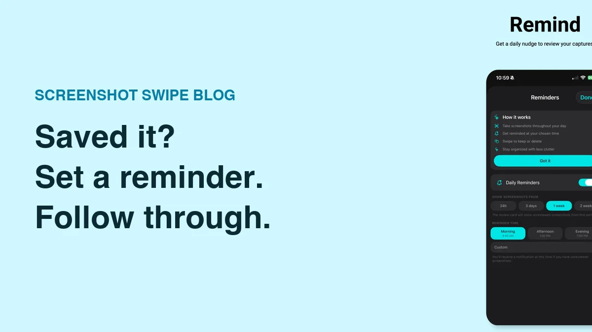

How to Set a Reminder for a Screenshot on iPhone

Quick answer: Create a task in Apple Reminders, attach the screenshot from your photo library, and choose a date and time. Name the action you need to take so the notification makes sense later. A screenshot organizer can also attach a reminder directly to a kept image, alongside its notes and tags.
You screenshot a concert announcement on Monday and remember it on Saturday, one day after tickets went on sale. The image preserved the information. A reminder could have given you a moment to use it.
How do you attach a screenshot to Apple Reminders?
- Save the screenshot to Photos, then open Reminders and create a new item.
- Give the task an action-based name, such as “Book the Saturday train.”
- Select the reminder and use its Photos button to choose the screenshot from your library.
- Open the reminder’s details, set the date and time, and save your changes.
Apple documents photo attachments and scheduling in Add details in Reminders. Some Reminders features depend on using updated reminders in iCloud; the options can differ with other accounts.
Open the saved task once to check that the attachment is readable. If the screenshot contains a tiny booking code, copy the code into the task’s notes as well. That gives you a quick reference when you are standing in a queue.
What should the reminder actually say?
Use a verb, an object, and any detail needed to start: “Compare the two train fares before booking.” A task called “Screenshot” forces you to reconstruct the decision from scratch when the notification arrives.
- Shopping: “Check whether these shoes are available in my size.”
- Travel: “Download the boarding pass before leaving home.”
- Home: “Measure the shelf opening before ordering.”
- Work: “Send the revised draft with these three changes.”
The attachment supplies reference material. Put the next action in the title and the reasoning in the note. A short task is easier to recognize when several notifications arrive together.
When should you schedule the alert?
Choose a time when you can do something about it. A reminder to measure a shelf belongs in a period when you are home. A reminder about tickets belongs before the sale closes, with enough time to make the purchase.
Separate an external deadline from your own working time. If a form is due Friday, plan a Wednesday check. For something with no deadline, give it a deliberate review slot and decide then whether it still matters.
Can you keep the reminder with the screenshot itself?
Screenshot Swipe lets you attach a reminder when keeping or editing a screenshot, alongside a note and tags. It also offers review reminders for your queue. These serve two different purposes: one brings back a particular item, while the other helps you review new captures. Both are described in the App Store listing.
Choose the system you already return to. If Apple Reminders is your daily task list, an image attachment is a sensible fit. If your unfinished actions live among saved screenshots, attaching the due time during review reduces the number of separate filing decisions.
What should you check if the reminder does not alert you?
First confirm that the item has the intended date and time and is still incomplete. Then check notification permission for the app and whether your current Focus settings are silencing it. Apple’s notification settings guide explains the system controls.
Test with a harmless reminder due a few minutes from now before relying on a new setup. After the action is finished, complete the task and review whether you still need the screenshot. The organization guide gives you a small weekly routine for that final cleanup.
What else should you know?
Can I set a reminder on a screenshot without another app?
You can use the Reminders app that comes with your iPhone. Create a task, attach the saved screenshot, and choose when it is due. This keeps the image beside the action, which is useful when a notification needs to bring back a booking, instruction, or product detail.
Is a daily screenshot review the same as an item reminder?
They answer different needs. A review reminder prompts you to sort a batch of recent captures. An item reminder points you toward one specific action. Use a recurring review for general upkeep and give time-sensitive screenshots their own task with a useful title and due time.
Should I delete a screenshot after completing the reminder?
Review its remaining value first. A one-time confirmation may be finished, while a receipt or set of instructions could remain useful. Keep records you expect to need again and give them a clear label. Completing the task is a good moment to make that separate storage decision.
What is a useful reminder title?
Write what you want to do when the alert appears. “Call the shop about this part” gives you an action; “important image” gives you another puzzle. Add the screenshot for reference and include a short note if the next step depends on context that is easy to forget.
How can you turn one screenshot into an action today?
- Choose one screenshot that still needs a decision.
- Name the next action, attach the image, and schedule a time when you can act.
- Test notifications, then complete or reschedule the task when it appears.
Give that screenshot a next step.
Screenshot Swipe is free to start. Keep an image with a note and a reminder, or set a daily nudge to review your recent captures.
Download on theApp Store